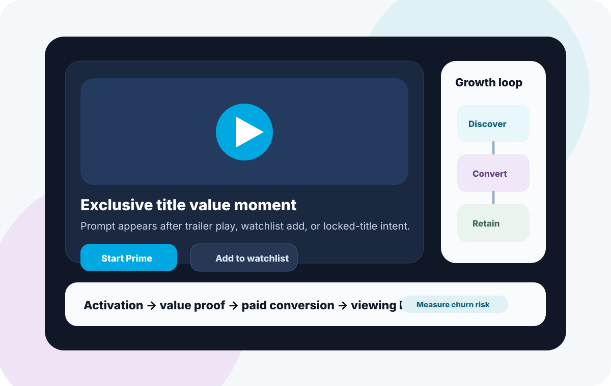

Context
Streaming subscription growth depends on helping users understand value before their intent fades. Users often browse titles, compare platforms, look for one specific show, and decide quickly whether the subscription feels worth it.
This case frames Prime Video subscription growth through product strategy: activation, content discovery, conversion prompts, payment friction, engagement, and retention.

A representative streaming growth interface showing how content discovery, watchlist intent, subscription prompts, and retention loops can connect.
The problem in detail
Users may arrive with interest in a title, genre, sports event, or recommendation, but they do not always understand the full value of a Prime subscription. If the product asks for payment before the user feels confident, conversion drops.
The challenge is to communicate subscription value at the right moment without making the experience feel pushy. The product must balance discovery, persuasion, and trust: show relevant content, explain benefits, reduce friction, and build post-subscription habits.
Users need to see personally relevant content quickly after landing.
Subscription benefits must feel worth paying for before the prompt appears.
Users may drop if plans, benefits, trials, or payment steps feel unclear.
After subscribing, users must build a habit through watchlists, recommendations, and content reminders.
My role
- Mapped the streaming subscription funnel from discovery to paid retention.
- Identified high-intent moments where subscription prompts can feel natural.
- Structured growth opportunities across activation, conversion, habit, and retention.
- Defined success metrics for trial starts, paid conversion, engagement, and churn.
- Framed the case as a product-led growth strategy for Prime Video.
User journey lens
Awareness
User lands through a title, offer, recommendation, search result, or external campaign.
Activation
User needs to quickly see relevant titles, benefits, quality signals, and reasons to subscribe now.
Conversion
Subscription prompts should appear at moments of high intent, with clear plan value and low friction.
Retention
Post-subscription usage depends on watchlist building, personalization, reminders, and habit loops.
Subscription growth improves when the product sells value at the exact moment the user understands it.
Growth opportunities
Highlight relevant movies, series, sports, and regional content based on intent and behavior.
Trigger subscription CTAs after high-intent actions like playing a trailer, opening a locked title, or adding to watchlist.
Show plan benefits, content depth, device support, trial information, and cancellation clarity.
Encourage users to save titles before and after subscribing so they have a reason to return.
Guide new subscribers toward first watch, profile setup, language preferences, and notifications.
Use new content drops, unfinished shows, personalized recommendations, and renewal reminders.
Impact
- Improves activation by helping users discover relevant content faster.
- Improves conversion by placing subscription prompts at moments of high intent.
- Reduces confusion by making plan value, trial details, and benefits clearer.
- Builds retention through watchlists, continuation prompts, and personalized content reminders.
- Connects acquisition campaigns to downstream paid conversion and engagement quality.
Success metrics
- ActivationLanding-to-title-view conversionDecision: Are users finding relevant content?
- IntentTrailer plays and watchlist addsDecision: Is the content creating subscription motivation?
- ConversionTitle-view-to-trial-start conversionDecision: Are prompts appearing at the right moment?
- PaymentTrial-start-to-paid conversionDecision: Is plan value clear enough to pay?
- RetentionFirst-week watch completion and churnDecision: Are subscribers forming a viewing habit?
What I learned
- Subscription prompts work best when they follow a clear value moment.
- Streaming conversion is strongly tied to content relevance and perceived exclusivity.
- Retention starts before payment: a watchlist or content queue gives users a reason to return.
- Growth strategy should measure not only trial starts, but whether users watch enough to keep paying.
Full case-study link
Open the linked Notion case study for the original detailed write-up and supporting notes.